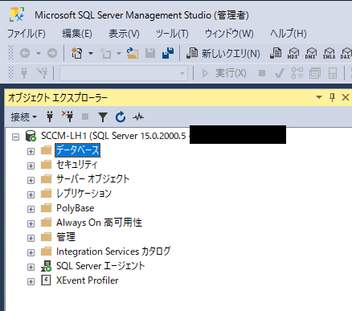
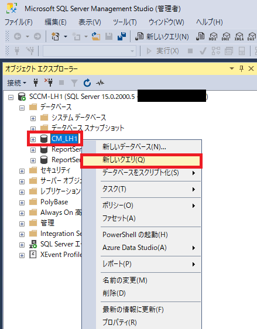
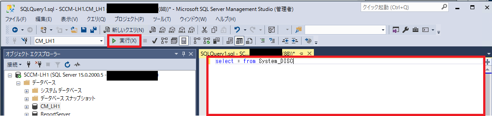
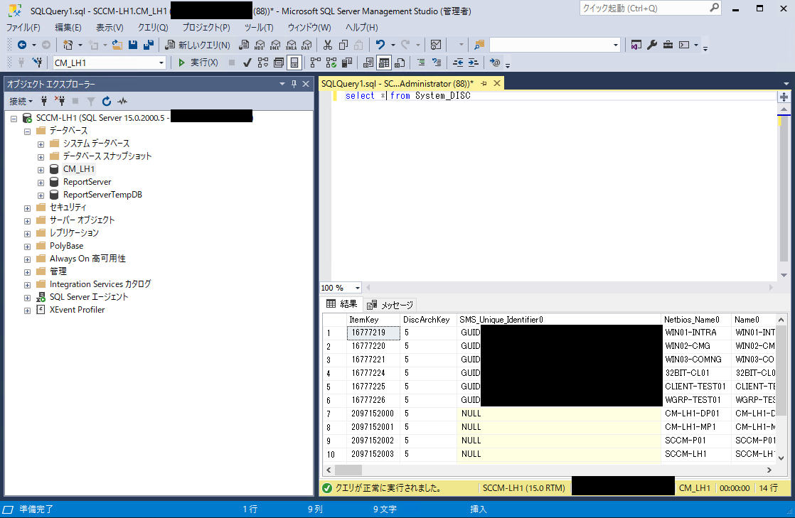
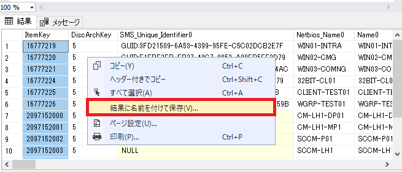

Configuration Managerにてデータベースの内容を確認するため、SQLクエリの実行をお願いいたします。
実行いただきたいクエリは都度担当者より案内させていただきます。
Configuration Managerのデータベースサーバー
Configuration Managerのサイト データベース管理者権限が必要になります。
サイト データベースを構成したサーバーにおいて、手順の実施をお願いします。
<サーバー名> (SQL Server <バージョン番号> - <ログイン ユーザー アカウント名>
└ データベース
└ CM_<サイト コード>

CM_<サイト コード> を右クリックし、[新しいクエリ] を実行します。




SQL Server Management Studio のウィンドウで × ボタンをクリックして、SQL Server Management Studio を終了します。
クエリを保存するかどうかのダイアログが表示されますが、特に保存する必要はございませんので、[No] をクリックしてください。
ご採取いただきました、csv をお手数ではございますが、弊社までお送りいただけますようよろしくお願いいたします。
本情報の内容（添付文書、リンク先などを含む）は、作成日時点でのものであり、予告なく変更される場合があります。